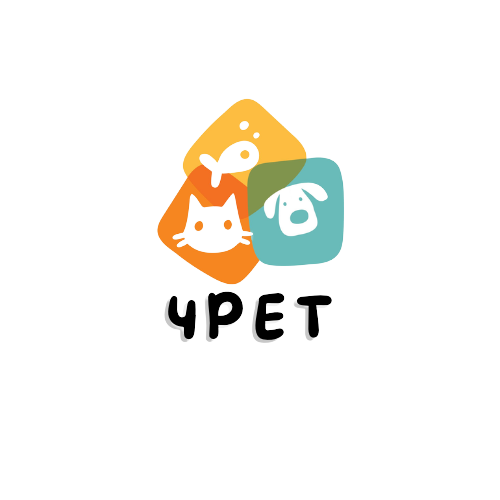
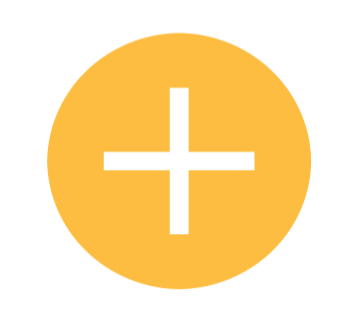

Adicione seu primeiro Pet

{{item.nome}}
{{item.raca}} | {{item.porte}} | {{item.sexo}}

Informe os dados do seu Pet
Nome / Apelido
Nascimento
Sexo
Macho
Fêmea
Tipo Sanguíneo
A+
A-
B+
B-
O+
O-
Porte
Pequeno
Médio
Grande
Raça
PitBull
Rotweiller
Labrador
Disponivel para adoção
Disponivel para cruzamento
Disponivel para mãe de leite
Salvar